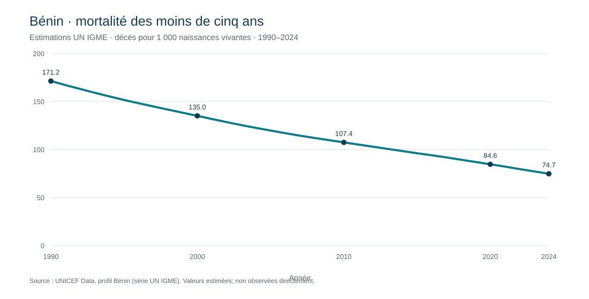

Tendances de la survie de l’enfant au Bénin
Lecture descriptive de la mortalité des enfants de moins de cinq ans à partir des estimations annuelles officielles UN IGME publiées par UNICEF Data.
Données publiques réelles · estimations modélisées · série 1990–20241. Contexte et justification
La survie de l’enfant est un indicateur majeur de santé publique. Les séries harmonisées permettent de suivre l’évolution dans le temps, mais elles doivent être interprétées comme des estimations, et non comme un décompte annuel observé dans un registre hospitalier.
2. Problématique
Comment présenter clairement l’évolution estimée de la mortalité des moins de cinq ans au Bénin sans confondre estimation statistique, observation directe et causalité ?
3. Objectifs
- restituer l’indicateur, son unité et sa période ;
- visualiser la série annuelle fournie par UNICEF Data/UN IGME ;
- documenter la provenance, les contrôles et les limites ;
- rendre le tableau, le résumé de provenance et le script visibles dans cette page.
4. Matériel et données
Indicateur : probabilité de décès avant le cinquième anniversaire, exprimée en décès pour 1 000 naissances vivantes. La série présentée va de 1990 à 2024 (35 estimations). La page UNICEF Bénin rapporte 171,2 en 1990 et 74,7 en 2024. Ce sont des estimations UN IGME harmonisées, non des observations individuelles ni des décès bruts.
Source primaire : UNICEF Data — profil du Bénin. Aucune donnée DHS individuelle n’est utilisée.

Tableau complet de la série publique
| Année | Décès avant 5 ans / 1 000 naissances vivantes | Type |
|---|---|---|
| 1990 | 171.2 | estimation UN IGME |
| 1991 | 167.0 | estimation UN IGME |
| 1992 | 163.0 | estimation UN IGME |
| 1993 | 159.0 | estimation UN IGME |
| 1994 | 155.2 | estimation UN IGME |
| 1995 | 151.5 | estimation UN IGME |
| 1996 | 148.1 | estimation UN IGME |
| 1997 | 144.8 | estimation UN IGME |
| 1998 | 141.5 | estimation UN IGME |
| 1999 | 138.3 | estimation UN IGME |
| 2000 | 135.0 | estimation UN IGME |
| 2001 | 131.7 | estimation UN IGME |
| 2002 | 128.5 | estimation UN IGME |
| 2003 | 125.4 | estimation UN IGME |
| 2004 | 122.5 | estimation UN IGME |
| 2005 | 119.7 | estimation UN IGME |
| 2006 | 117.0 | estimation UN IGME |
| 2007 | 114.4 | estimation UN IGME |
| 2008 | 112.0 | estimation UN IGME |
| 2009 | 109.7 | estimation UN IGME |
| 2010 | 107.4 | estimation UN IGME |
| 2011 | 105.1 | estimation UN IGME |
| 2012 | 102.9 | estimation UN IGME |
| 2013 | 100.6 | estimation UN IGME |
| 2014 | 98.4 | estimation UN IGME |
| 2015 | 96.1 | estimation UN IGME |
| 2016 | 94.0 | estimation UN IGME |
| 2017 | 91.8 | estimation UN IGME |
| 2018 | 89.4 | estimation UN IGME |
| 2019 | 87.0 | estimation UN IGME |
| 2020 | 84.6 | estimation UN IGME |
| 2021 | 82.2 | estimation UN IGME |
| 2022 | 79.6 | estimation UN IGME |
| 2023 | 77.2 | estimation UN IGME |
| 2024 | 74.7 | estimation UN IGME |
Résumé JSON de provenance
{
"dataset": "UNICEF Data country profile: Benin, under-five mortality rate",
"indicator": "Probability of dying before age five, expressed per 1,000 live births (UN IGME estimate series)",
"source_url": "https://data.unicef.org/country/ben/",
"retrieved_on": "2026-10-18",
"source_series_years": [
1990,
2024
],
"observations": 35,
"data_type": "official modelled estimates, not raw observed deaths or individual records",
"use": "descriptive visualization only; annual points are estimates and should not be treated as independent observed samples",
"license_note": "Consult the source website terms and attribution requirements before reuse."
}5. Méthode et justification
- Source : choisir UNICEF Data/UN IGME car la série nationale est harmonisée et documentée pour la comparaison temporelle; elle évite de mélanger des chiffres issus de définitions ou méthodes différentes.
- Unité : conserver les décès pour 1 000 naissances vivantes; ne pas présenter l’indicateur comme un taux hospitalier brut.
- Contrôle : vérifier l’unicité des années, la présence des 35 points de 1990 à 2024, les valeurs numériques positives et la cohérence des extrémités avec la page source.
- Visualisation : garder une échelle y démarrant à zéro et afficher l’unité, la période et la provenance afin d’éviter une dramatisation visuelle.
- Interprétation : décrire une tendance; ne pas calculer de test de tendance ou d’intervalle absent de la source, et ne pas inférer une relation causale.
6. Résultats
La série rapportée passe de 171,2 décès pour 1 000 naissances vivantes en 1990 à 74,7 en 2024. La différence relative calculée entre ces deux estimations est d’environ −56,4 %. Le résultat décrit le mouvement des estimations publiées; les intervalles d’incertitude ne sont pas reproduits ici et doivent être consultés dans la plateforme UN IGME avant une analyse d’incertitude.
7. Limites
- Les valeurs annuelles sont modélisées et peuvent être révisées lors d’une nouvelle édition UN IGME.
- Le graphique ne contient pas les intervalles d’incertitude ni les données empiriques utilisées par le modèle.
- Cette série nationale ne permet pas d’expliquer les causes, d’évaluer une intervention ou de comparer les départements.
- Les résultats DHS microdonnées exigent une demande d’accès; ils ne sont pas inclus ni nécessaires à cette démonstration.
8. Références récentes (2017–2026)
- UNICEF Data. Profil Bénin – mortalité des moins de cinq ans, série 1990–2024. Consulter la source
- UN IGME. Levels & Trends in Child Mortality: Report 2024. Consulter la source
- UN IGME. Levels & Trends in Child Mortality: Report 2025. Consulter la source
- WHO. Child mortality (under 5 years), fact sheet, 2026. Consulter la source
- WHO. Child mortality and causes of death – Global Health Observatory. Consulter la source
- UN IGME. CME Info: estimation methods. Consulter la source
- UNICEF. Regional snapshot for maternal, newborn and child health, 2025. Consulter la source
- DHS Program. Benin Demographic and Health Survey 2017–2018: catalog and access. Consulter la source
- World Bank. World Development Indicators: under-five mortality indicator (SH.DYN.MORT). Consulter la source
- WHO. Under-five mortality rate: indicator definition and metadata. Consulter la source
Code Python complet
Afficher le script qui valide la série et génère la figure SVG
#!/usr/bin/env python3
"""Rebuild the public Benin child-survival table and SVG from the bundled UNICEF series."""
import csv, html, json
from pathlib import Path
ROOT=Path(__file__).resolve().parents[1]
source=ROOT/"data/benin_unicef_under5_mortality_1990_2024.csv"
out=ROOT/"results/under5_mortality_benin.svg"
with source.open(encoding="utf-8",newline="") as f: rows=list(csv.DictReader(f))
if len(rows)!=35 or [int(r["year"]) for r in rows]!=list(range(1990,2025)): raise SystemExit("Unexpected year coverage")
vals=[float(r["u5mr_deaths_per_1000_live_births"]) for r in rows]
W,H=1100,560; x0,y0,pw,ph=95,100,930,360
svg=['<svg xmlns="http://www.w3.org/2000/svg" viewBox="0 0 1100 560" role="img" aria-labelledby="t d">','<title id="t">Mortalité des moins de cinq ans au Bénin, estimations UN IGME</title>','<desc id="d">Série annuelle UNICEF Data de 1990 à 2024, en décès pour 1 000 naissances vivantes.</desc>','<rect width="100%" height="100%" fill="#fff"/>','<text x="55" y="48" font-family="Arial" font-size="25" fill="#153b52">Bénin · mortalité des moins de cinq ans</text>','<text x="55" y="75" font-family="Arial" font-size="15" fill="#59686e">Estimations UN IGME · décès pour 1 000 naissances vivantes · 1990–2024</text>']
for tick in (0,50,100,150,200):
y=y0+ph-(tick/200)*ph; svg += [f'<line x1="{x0}" y1="{y:.1f}" x2="{x0+pw}" y2="{y:.1f}" stroke="#d7e1e4"/>',f'<text x="{x0-12}" y="{y+5:.1f}" text-anchor="end" font-family="Arial" font-size="13" fill="#59686e">{tick}</text>']
pts=[]
for i,v in enumerate(vals):
x=x0+i*pw/(len(vals)-1); y=y0+ph-v/200*ph; pts.append(f"{x:.1f},{y:.1f}")
svg += [f'<polyline points="{" ".join(pts)}" fill="none" stroke="#087e8b" stroke-width="4" stroke-linejoin="round"/>']
for i in (0,10,20,30,34):
x=x0+i*pw/(len(vals)-1); y=y0+ph-vals[i]/200*ph; svg.append(f'<circle cx="{x:.1f}" cy="{y:.1f}" r="5" fill="#153b52"/><text x="{x:.1f}" y="{y-12:.1f}" text-anchor="middle" font-family="Arial" font-size="13" fill="#153b52">{vals[i]:.1f}</text><text x="{x:.1f}" y="{y0+ph+25}" text-anchor="middle" font-family="Arial" font-size="13" fill="#59686e">{rows[i]["year"]}</text>')
svg += [f'<text x="{x0+pw/2}" y="{y0+ph+65}" text-anchor="middle" font-family="Arial" font-size="14" fill="#59686e">Année</text>','<text x="55" y="530" font-family="Arial" font-size="12" fill="#59686e">Source : UNICEF Data, profil Bénin (série UN IGME). Valeurs estimées; non observées directement.</text>','</svg>']
out.parent.mkdir(parents=True,exist_ok=True); out.write_text("\n".join(svg)+"\n",encoding="utf-8")
print(f"Generated {out.name} from {len(rows)} real, modelled annual estimates.")
Logiciel de reproduction : Python 3 (site officiel). Données, tableau, provenance et code sont visibles sur cette page.